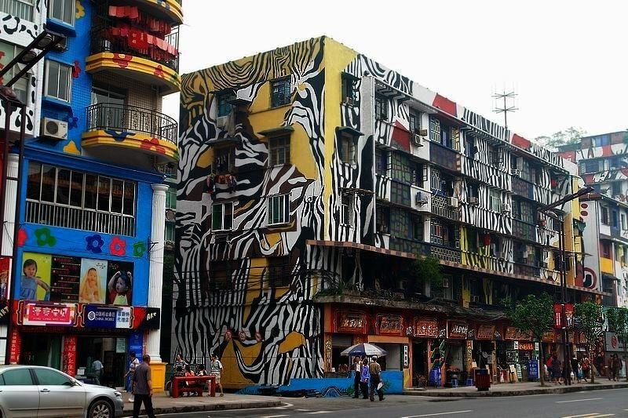

十八梯
重庆城分为上半城和下半城，十八梯是从上半城（山顶）通到下半城（山脚）的一条老街道，象征着真正的山城老重庆。这条老街道全部由石阶铺成，把山顶的繁华商业区和山下江边的老城区连起来。十八梯两边居住着普通老百姓，街上散发着浓浓的市井气息。掏耳朵的、修脚的、做木工的、做裁缝的、卖烧饼的、卖针线、打麻将的，还有山城绝对少不了的棒棒军，不加掩饰地呈现在眼前。十八梯是老重庆市民生活的真实写照。
磁器口古镇
国家AAAA级景区。始建于宋代，拥有“一江两溪三山四街”的独特地貌，形成天然良港，是嘉陵江边重要的水陆码头。曾经“白日里千人拱手，入夜后万盏明灯”繁盛一时。磁器口古镇蕴含丰富的巴渝文化、宗教文化、沙磁文化、红岩文化和民间文化，各具特色。一条石板路，千年磁器口，是重庆古城的缩影和象征，被赞誉为“小重庆”。磁器口古镇开发有榨油、抽丝、制糖、捏面人、川戏等传统表演项目和各种传统小吃、茶馆等，每年春节举办的磁器口庙会是最具特色的传统活动，吸引数万市民前往参与。磁器口鲜明的民族和地域特色，显示出旺盛的生命力和强大的吸引力，每天来自海内外参观、旅游的宾客纷至沓来、络绎不绝。

朝天门
重庆最著名的文化地标之一。作为重要的水路码头，朝天门如今依然发挥着重要的运输作用，也是游客来到重庆的必去之地。
道门口
曾经是非常繁华的金融区，现在稍微有些破旧。因为紧靠重庆市第一人民医院，如今这里总是人来人往。
领事巷
因为曾经众多使馆聚集于此，各国领事都在此汇集，自然得此名。而和它紧紧相连的，就是山城巷。
四方街
这里曾经是重庆城的娱乐中心。当时，很多的歌舞厅都汇聚在这里，风光无限。